Hands-on Cloud Data Fusion
Creating a simple pipeline from CloudMySql to BigQuery

Sudharsan K
Data Engineer.
Introduction
Sudharsan K
Data Engineer.
Google Cloud created a robust data integration and transformation platform called Data Fusion. It enables businesses to speed up collecting, processing, and analyzing data from multiple sources, offering a unified view of the data for insights and decision-making. Data Fusion provides a visual interface that enables users to construct data pipelines without writing code, simplifying the challenging work of data integration. Data Fusion enables users of all skill levels to quickly orchestrate the migration of data between various systems, like databases, cloud storage, and data lakes, thanks to its drag-and-drop interface and pre-built connectors.
Data Fusion has the ability to handle both batch and real-time data processing. It also provides a rich set of built-in transformations and data cleansing capabilities. With these tools, users can transform raw data into meaningful and actionable insights, ensuring data quality and consistency along the way.
Additionally, Data Fusion can be integrated with other Google Cloud services, such as BigQuery, Pub/Sub, Dataflow, and Dataproc, enabling organizations to leverage the full power of Google’s data analytics and machine learning ecosystem. This integration allows for advanced analytics, AI model training, and predictive analytics to be performed on the unified and processed data.
In this Hands on we will see how to create a simple pipeline where data is extracted from Cloudsql MySQL and loaded into Bigquery. I have created a MySql instance in CloudSQL in which I have created a database test with a table student for the demo. I have also created a table stu1 in Bigquery before executing the pipeline.
Creating a Cloud Fusion instance:
- Before using Cloud Data Fusion, one must create a Google Cloud project and enable billing.
- To enable and disable the Cloud Data Fusion API, administrator permission is necessary.
- Enable Cloud Data Fusion.
You can use an existing project with Cloud Data Fusion or create a new one. If you’re using an existing project, you need to enable the Cloud Data Fusion API.
To create a project and enable the Cloud Data Fusion API:
- In the Google Cloud console, select or create a project.
- Make sure that billing is enabled for your project.
- Go to the API Overview page for Cloud Data Fusion.
- Click Enable.
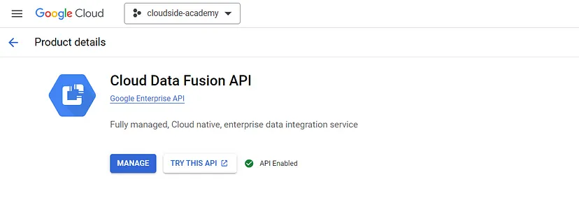
Permissions Required:
For creating CDF, we will need a service account with the following permissions
- Cloud Data Fusion Runner
- Dataproc Worker
- BigQuery Data Admin
Also, we need to give the Service Account user permission to the default data fusion account. To do that, select the created service account → Manage access → Add Principals → Search and select Default Datafusion service account → Give Service Account User permission.
Create a Cloud Data Fusion instance
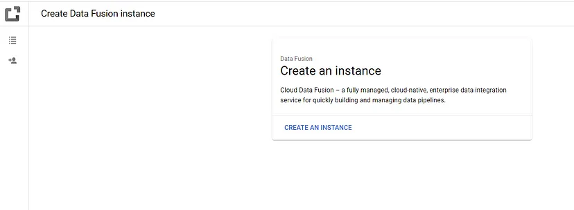
- Click Create an Instance.
- Enter an Instance name.
- Enter a Description for your instance.
- Enter the Region in which to create the instance.
- Choose the Cloud Data Fusion Version to use.
- Choose the Cloud Data Fusion Edition.
- For Cloud Data Fusion versions 6.2.3 and later, in the Authorization field, choose the Dataproc service account to use for running your Cloud Data Fusion pipeline in Dataproc. The default value, Compute Engine account, is pre-selected.
- Click Create.
It takes up to 20-30 minutes for the instance creation process to complete. While Cloud Data Fusion creates your instance, a progress wheel displays next to the instance name on the Instances page. After completion, it turns into a green check mark and indicates that you can start using the instance.
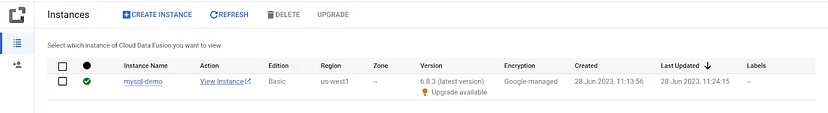
- In the instance Actions column, click the View Instance link.
- In the Cloud Data Fusion web interface, use the left navigation panel to navigate to the page you need.
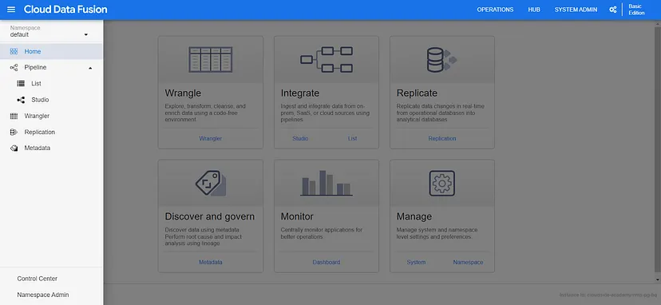
- Click on Studio under the Pipeline section to hop right into creating a pipeline.
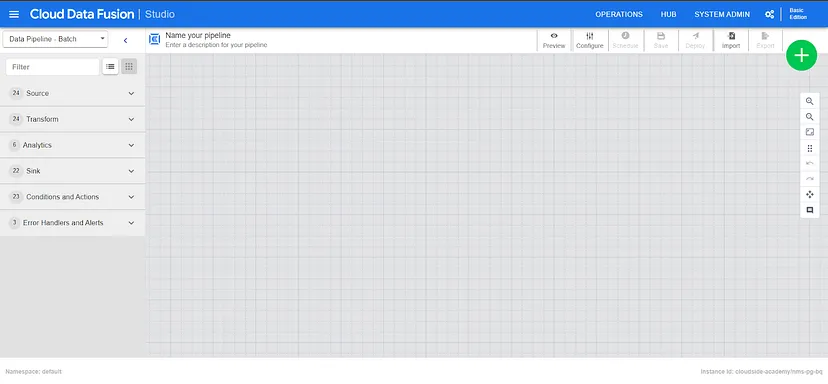
Source: It is where one can find and configure the data sources for data integration pipelines.
Transform: It consists of a variety of transformation operators that can be used to modify and shape the data. These operators include functions for data cleansing, filtering, aggregating, joining, splitting, deriving new columns, and more.
Analytics: It has a few analytics plugins that can be used for analyzing the data.
Sink: It consists of a variety of sink connectors (destinations) that can be used to connect different target systems or data storage platforms. These connectors could include databases (e.g., PostgreSQL, MySQL), cloud storage (e.g., Google Cloud Storage, Amazon S3), data warehouses (e.g., Google BigQuery, Snowflake), messaging systems (e.g., Apache Kafka, Google Cloud Pub/Sub), and more.
Conditions and Actions: It is used to control the flow of the pipelines. Conditions can be used to branch the pipeline into two or more paths, depending on whether a certain condition is met. Actions are used to perform custom logic or operations at certain points in the pipeline.
Error Handlers and Alerts: It allows one to configure how Data Fusion responds to errors that occur during the execution of a pipeline. One can use error handlers to specify what action Data Fusion should take when an error occurs, such as retrying the operation, failing the pipeline, or sending an alert. Alerts can also be specified on who should be notified when an error occurs.
Creating a pipeline:
For the demo purpose, we’ll be creating a simple pipeline where we extract data from Cloud Mysql and load it into Bigquery.
- Give a name for the pipeline.
- From the source click on Cloud Mysql.
- From the sink section click on BigQuery.
- Connect Cloud Mysql to BigQuery.
Now your screen will look like the following:
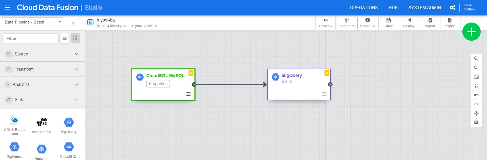
Data Fusion Interface
Fill up the details that are required to set up the pipeline by clicking on the properties to set up the connection to Cloudsql MySQL Instance. Repeat the same for Bigquery.
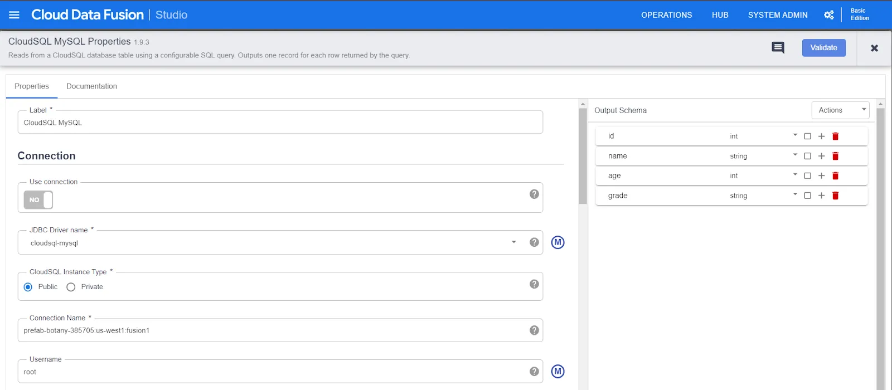
CloudSQL MySQL Properties
(Note: If you don’t have a JDBC driver for Cloudsql Mysql, Install it from the HUB section.)
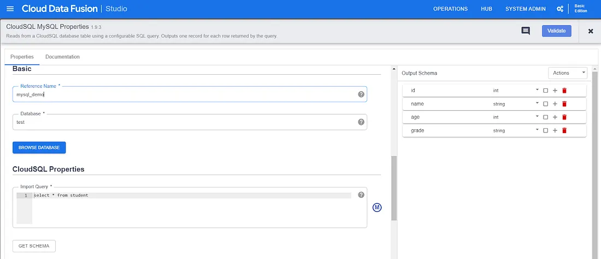
CloudSQL MySQL Properties
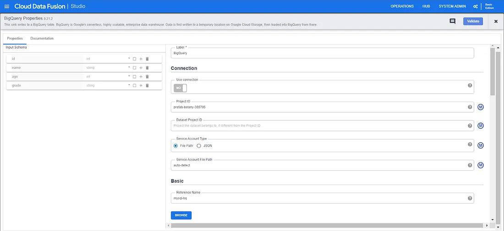
BigQuery Properties
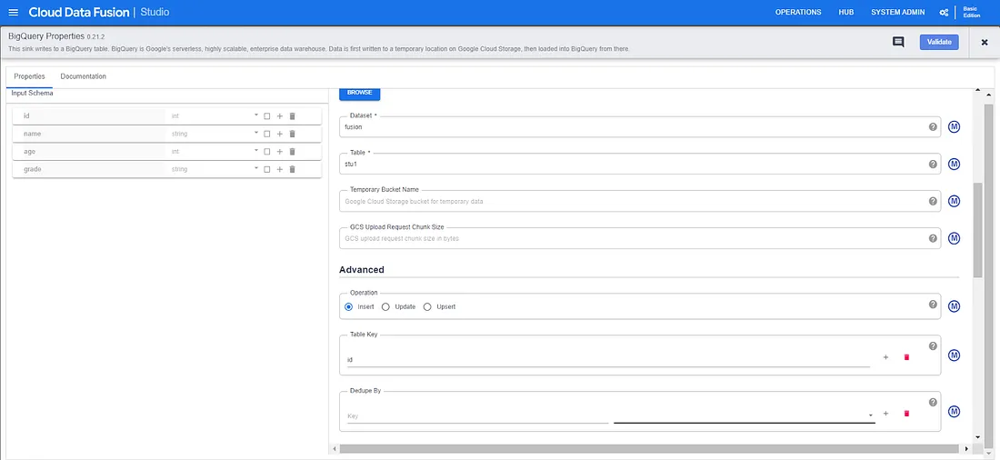
BigQuery Properties
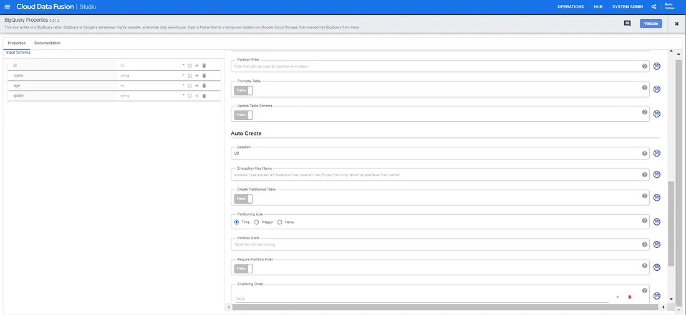
BigQuery Properties
Click on Validate to test the connection. Resolve the errors if there is any. Once that is done all there is left is to deploy the pipeline and click RUN.
View the Results:
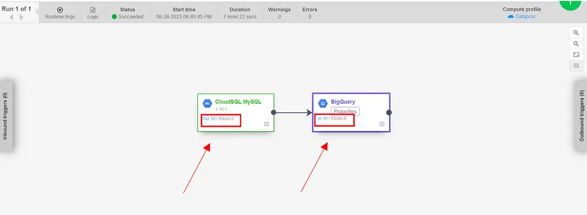
Go to the BigQuery interface and select the table to which you loaded the data and view whether the data has been loaded.
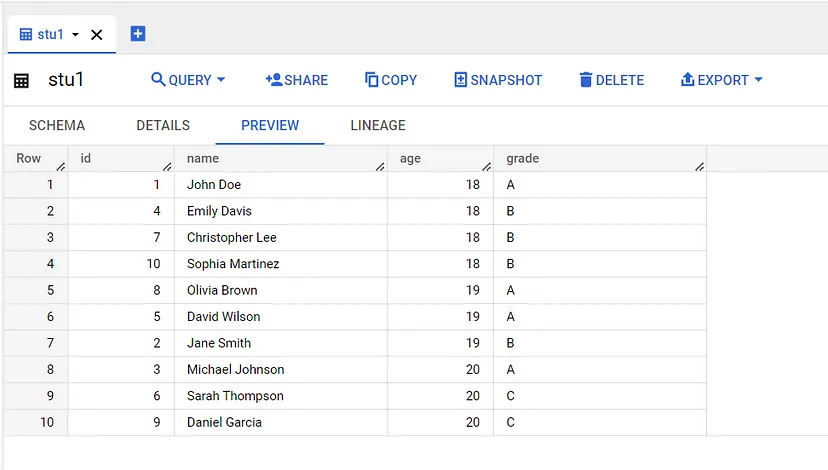